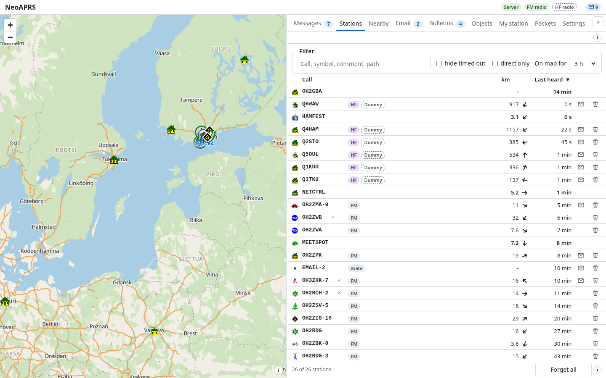

APRS for the radio you already have.
A map, messages and your beacon, in a browser or as a desktop app. VHF with any KISS TNC, HF with the Mercury modem built in. Windows, macOS, Linux and the Raspberry Pi.

Download
| Windows | NeoAPRS-Setup.exe | No administrator rights needed. If SmartScreen warns: More info, Run anyway. |
|---|---|---|
| macOS | NeoAPRS-arm64.dmg | Apple silicon, macOS 14 or newer. The first time: right-click, Open. |
| Linux | NeoAPRS-x86_64.AppImage | chmod +x NeoAPRS-*-x86_64.AppImage and run it. |
| Raspberry Pi, Debian, Ubuntu | neoaprs_<version>_arm64.deb | sudo apt install ./neoaprs_*.deb && neoaprs service install --linger (amd64 for a PC) |
| Source | github.com/oh2gba/neoaprs | GPL v3 or later. |
The first start asks for your call, position, symbol and radio. No radio at hand: choose the radio type Dummy.
Features
-
Stations
Every station heard, with distance, bearing and when, tagged FM or HF. The row menu sends a message or an APRS query.

-
Messages
Acks and retries, and the way each message went, hop by hop. Bulletins, group messages and email through the gateway.

-
Weather
Readings, and graphs of the last 24 hours and 7 days.

-
Nearby
Digipeaters, iGates and voice frequencies, nearest first, with a digipeater's range on the map.

-
Beacon
Fixed, or from a GPS with SmartBeaconing. Receive only is one tick.

-
Objects
Your own objects and items, placed on the map, sent on FM, HF or both.

-
Packets
Every frame with its radio and path. An optional digipeater and receive-only iGate.

-
Phone and tablet
Run it on a Raspberry Pi by the radio and open it on any device at home, with an access key. Eight languages.


HF
A second radio beside the FM one: an SSB radio with a sound card and Rhizomatica's Mercury modem, which comes with NeoAPRS. HF stations are on the same map and in the same messages.
- Nothing to install. The sound card and the keying are preselected.
- No path: every frame goes direct.
- A frame takes 3.8 s; a message and its ack about 10 s.
- Beacon every 30 minutes at the least.
- Tune and Test to set up the radio; a Dummy HF radio to try it without one.
- Tested on the bench, not yet between two stations on the air.
40 m7.0541 MHzUSB


Radios
- Kenwood TH-D7, TM-D700, TS-2000; TNC-2 clones (MFJ-1270B, 1274, 1278, TAPR)
- serial, 9600
- Kenwood TM-D710, TH-D72
- serial or USB
- Kenwood TH-D74, TH-D75
- USB or Bluetooth
- Mobilinkd TNC3, TNC4
- USB, Bluetooth or Bluetooth LE
- BTech UV-PRO, Vero VR-N76, Radioddity GA-5WB (untested)
- Bluetooth
- PicoAPRS V4 (untested)
- Bluetooth, USB-C or TCP
- LoRa APRS, CA2RXU firmware (untested)
- KISS over TCP or Bluetooth LE
- NinoTNC, TNC-Pi, TNC-X, any TNC in KISS
- USB or serial
- Kantronics KPC-3+
- RS-232
- Any radio with a sound-card interface (Digirig, SignaLink), through Direwolf
- KISS over TCP
- HF: an SSB radio with a USB sound card or an interface (DigiRig, SignaLink)
- Mercury modem, built in
- A GPS receiver
- gpsd or serial
The radio guide has the setup of each.
Screenshots


The calls in the screenshots are made up.